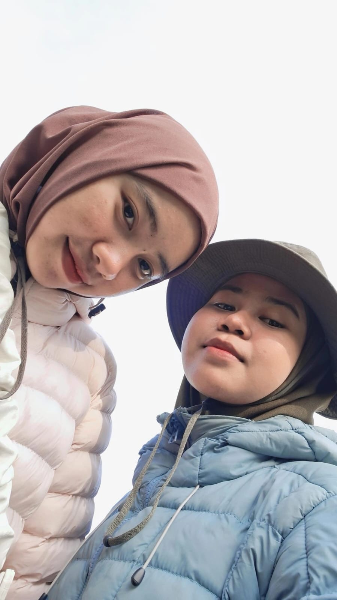

Terima kasih sudah hadir.
Bukan cuma di hari-hari seru, tapi juga sebagai bagian dari keseharianku. Kehadiranmu punya tempat yang nggak bisa digantikan begitu saja.
Some people feel like home.
Kalau suatu hari kita terlalu sibuk untuk mengingat semua hal kecil yang pernah kita lalui, aku ingin ada satu tempat yang menyimpannya. Tempat yang bisa kamu buka kapan saja, dan tahu bahwa kamu pernah—dan masih—berarti begitu banyak untukku.
Baca cerita kita ↘

Where our story quietly began
Hida, aku kadang masih suka mikir: dari sekian banyak orang yang kutemui, kenapa justru kamu yang akhirnya jadi salah satu orang terdekat dalam hidupku?
Awalnya kita cuma dua orang yang sama-sama menjalani masa matrikulasi. Datang dengan cerita masing-masing, dengan dunia yang sebelumnya belum saling mengenal. Waktu itu kita belum tahu akan ada begitu banyak hari yang kita lewati bersama.
Aku nggak ingat kapan tepatnya obrolan biasa berubah jadi rasa nyaman. Nggak ada satu momen besar yang tiba-tiba membuat kita dekat. Rasanya semuanya terjadi pelan-pelan. Dari saling kenal, saling menyapa, sampai akhirnya kehadiranmu terasa begitu wajar dalam keseharianku.
Dan mungkin justru itu yang membuatnya istimewa. Persahabatan kita nggak datang dengan pengumuman. Dia tumbuh diam-diam, sampai suatu hari aku sadar: oh, ternyata aku sudah punya seseorang yang ingin kuceritakan banyak hal.

“Aku nggak pernah tahu sebuah pertemuan yang kelihatannya biasa bisa menjadi bagian yang begitu penting dari hidupku.”
— a note to Hida

Kalau matrikulasi adalah awal kita saling mengenal, GUMPALA menjadi salah satu tempat kita punya lebih banyak cerita. Ada hari yang menyenangkan, ada yang melelahkan, ada hal-hal yang ternyata nggak semudah yang dibayangkan.
Di tengah semua itu, ada kamu. Dan aku ingin kamu tahu sesuatu yang mungkin belum cukup sering kusampaikan: kehadiranmu pernah menjadi salah satu alasan terbesarku untuk tetap bertahan di sana.
Bukan karena semua hal selalu terasa ringan kalau bersamamu. Tapi karena tahu ada kamu di antara banyaknya hal yang harus dihadapi membuat semuanya terasa sedikit lebih mungkin dijalani.
Aku menyimpan banyak kenangan dari masa itu. Bukan cuma tentang kegiatan atau tempat yang kita datangi, melainkan tentang bagaimana kita perlahan mengenal sisi-sisi lain satu sama lain.
Terus ada tektok, perjalanan, dan hari-hari ketika kita memilih keluar sebentar dari rutinitas. Aku suka memikirkan bahwa di antara semua langkah itu, kita bukan cuma sedang pergi ke suatu tempat. Kita juga sedang mengumpulkan cerita.

Another little adventure with you. ♡

Barangkali nanti kita lupa detail kecilnya: jam berapa berangkat, siapa yang paling duluan capek, atau apa saja yang kita obrolkan sepanjang jalan.
Tapi aku harap kita nggak lupa rasanya. Rasanya punya teman untuk berbagi perjalanan. Rasanya bisa menoleh dan tahu bahwa kita nggak sendirian.
Dan kalau suatu hari kita kembali melihat foto-foto ini, semoga kita bisa tersenyum dan bilang, “Ya ampun, kita pernah sejauh itu, ya.”
more places, more stories, please.Hida, aku nggak mau menulis seolah-olah perjalanan kita selalu sempurna. Kita pernah punya hari yang nggak mudah. Ada hal yang mungkin nggak langsung kita pahami, ada perasaan yang susah dijelaskan, dan ada waktu ketika kita sama-sama belajar bagaimana caranya menjaga sebuah persahabatan.
Tapi aku bersyukur karena cerita kita nggak berhenti di hari-hari yang sulit itu.
Aku belajar bahwa menyayangi seseorang bukan berarti kita akan selalu sepakat. Kadang justru kita perlu belajar mendengar, mengerti, meminta maaf, dan memberi ruang untuk saling tumbuh.
Dan di antara banyak hal yang bisa berubah, ada satu jawaban sederhana yang masih ingin kupegang: always.
Aku nggak menjanjikan akan selalu menjadi sahabat yang paling pandai memahami. Tapi aku ingin terus belajar menjadi sahabat yang lebih baik untukmu.
Not because every day is easy.
Because some people are worth
understanding, again and
again.
Dulu kita bertemu di matrikulasi, tanpa tahu akan sampai di titik ini. Sekarang kita sama-sama menjalani kesibukan kuliah dan organisasi. Kamu dengan tanggung jawabmu sebagai wakil ketua BEM, aku dengan tugasku sebagai sekretaris.
Rasanya lucu sekaligus mengharukan melihat bagaimana waktu membawa kita ke tempat-tempat yang dulu mungkin nggak pernah kita bayangkan.
Aku tahu kita bisa sama-sama capek. Ada banyak hal yang harus dipikirkan, banyak pekerjaan yang menunggu, dan kadang energi kita sudah habis sebelum hari benar-benar selesai.
Jadi, kalau suatu hari kamu merasa terlalu lelah untuk menjadi kuat, aku harap kamu ingat: kamu nggak harus selalu terlihat baik-baik saja di depanku. Kamu boleh cerita, boleh diam dulu, boleh istirahat. Kamu tetap Hida yang kukenal dan kusayangi.
Di luar semua jabatan dan kesibukan itu, aku cuma ingin kita tetap punya ruang untuk menjadi dua sahabat yang bisa tertawa karena hal-hal sederhana.

Ini tempat untuk semua momen yang mungkin terlihat biasa bagi orang lain, tapi punya cerita tersendiri buat kita. Kita isi pelan-pelan, ya?


Bukan cuma di hari-hari seru, tapi juga sebagai bagian dari keseharianku. Kehadiranmu punya tempat yang nggak bisa digantikan begitu saja.
Dengan semua prosesmu, keberanianmu, dan caramu terus berjalan meski kadang pasti melelahkan. Aku harap kamu juga bisa melihat betapa jauhnya kamu sudah melangkah.
Nggak harus selalu ceria, nggak harus selalu kuat, nggak harus selalu punya jawaban. Di dekatku, kamu nggak perlu berpura-pura.
Walaupun nanti jadwal berubah, kesibukan bertambah, dan hidup membawa kita ke arah yang berbeda. Semoga kita tetap punya alasan untuk saling mengabari.
Hida,
Kalau kamu sudah sampai di bagian ini, berarti kamu sudah membaca cukup banyak cerita tentang kita. Mungkin ada bagian yang bikin kamu senyum, mungkin ada yang mengingatkanmu pada hari-hari yang sudah lewat. Aku berharap kamu membacanya pelan-pelan, karena website ini kubuat bukan untuk sesuatu yang mewah. Aku cuma ingin kamu tahu betapa berharganya persahabatan kita buatku.
Aku sering merasa waktu berjalan cepat sekali. Rasanya baru kemarin kita saling mengenal di matrikulasi. Lalu tahu-tahu sudah ada GUMPALA, perjalanan-perjalanan kita, cerita-cerita yang bertambah, dan sekarang kesibukan kuliah serta BEM yang kadang bikin kita sama-sama lelah.
Di antara semua itu, kamu jadi salah satu orang yang punya banyak tempat dalam ingatanku. Bukan karena kita selalu punya momen luar biasa, tapi justru karena ada banyak hal sederhana yang terasa lebih berarti ketika dijalani bersama.
Aku juga tahu aku nggak selalu mudah dimengerti. Ada saatnya aku terlalu banyak memikirkan sesuatu, ada saatnya aku nggak pandai menyampaikan apa yang kurasakan. Kalau pernah ada sikap atau kata-kataku yang membuatmu sedih, aku minta maaf. Aku masih belajar. Sama seperti kita yang masih terus bertumbuh.
Terima kasih karena pernah mau saling memahami, bahkan ketika keadaan nggak sederhana. Terima kasih karena tetap menjadi bagian dari ceritaku. Dan terima kasih karena, tanpa harus melakukan sesuatu yang besar, kamu sudah membuat banyak hari terasa berbeda.
Aku nggak tahu nanti kita akan berada di mana. Mungkin kita akan punya pekerjaan, kota, dan rutinitas yang berbeda. Mungkin kita nggak akan sesering sekarang bertemu atau mengobrol. Tapi aku berharap, kalau suatu hari kamu melihat foto-foto lama kita, kamu akan ingat bahwa di satu masa dalam hidupmu, ada seorang Ainun yang benar-benar bersyukur pernah dipertemukan denganmu.
Jaga dirimu baik-baik, ya. Jangan terlalu keras sama diri sendiri. Rayakan hal-hal kecil yang berhasil kamu lalui. Dan kalau dunia sedang terasa berat, semoga kamu selalu dikelilingi orang-orang yang memperlakukan hatimu dengan lembut.
Aku sayang kamu, Hida. Dengan cara yang sederhana, yang mungkin nggak selalu pandai kuucapkan. Tapi tulus.
Semoga masih ada banyak perjalanan, banyak foto buram, banyak cerita random, dan banyak tawa yang belum kita buat.
Untuk semua yang sudah kita lalui, dan semua yang belum terjadi: thank you for being here.
with love, Ainun ♡
Masih banyak halaman yang belum kita isi, Hida.